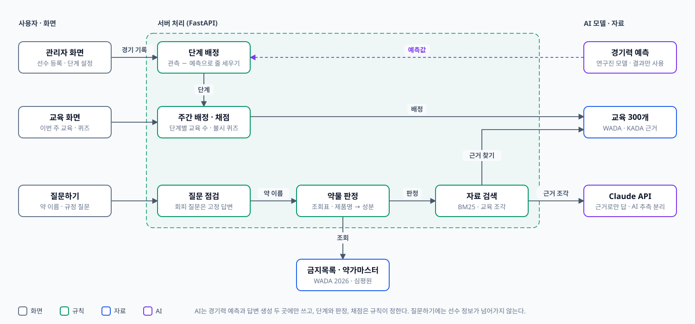

생성형 AI 기반 맞춤형 도핑 예방 교육 시스템
근거를 대지 못한 AI 답은 서버가 걸러내는 도핑 예방 교육 시스템
Impact
- 300개의 교육WADA 교육 국제표준 13개 대분류예측 대비 기록 차이로 단계를 나눠 주당 3~15개 배정
- 근거로만 답하는 챗봇규정 문서 근거로만 답하고, 약물 판정은 조회표가근거 없는 부분은 'AI 추측'으로 분리
- 원문 대조WADA 금지목록 추출 결함 28건 수정회귀 테스트 76개로 재발 방지
- 선수 정보 보호이름, 기록, 단계는 AI에 보내지 않음로그인 코드는 해시로만 저장
Background
모든 선수에게 같은 자료를 나눠 주던 도핑 예방 교육을 선수마다 다르게 주는 시스템입니다.
연구진의 경기력 예측과 실제 기록의 차이로 선수를 단계로 나누고, 단계마다 주당 교육 수와 불시 퀴즈 빈도를 정합니다.
논문에 실을 시연용 프로토타입이고 선수 데이터는 합성입니다. 선수 대상 시범 적용은 이후 단계입니다.
Architecture

Contributions
근거를 인용한 답만 내보낸다
처음 만든 챗봇은 없는 규정과 출처를 그럴듯하게 지어냈습니다.
지금은 서버가 교육 자료를 먼저 검색해 넘기고, 모델은 그 자료를 근거로만 답합니다.
- 인용이 실제로 넘겨준 자료인지 서버가 확인
- 자료로 답할 수 없는 부분은 'AI 추측'으로 따로 표시. 금지 여부와 용량은 추측에서 제외
- 검사 회피를 묻는 질문은 서버가 고정 답변
약물 판정은 조회표로
금지 여부를 모델에게 물으면 그럴듯한 오답이 나올 수 있어, 판정은 출처가 붙은 조회표가 내리고 모델은 설명만 맡습니다.
- 판정은 여섯 가지. 목록에 없다고 먹어도 되는 것은 아니라서 '허용'은 두지 않음
- 국내 제품명은 심평원 약가마스터로 성분을 찾아 판정
- 조회표 판정 원본을 답변 아래 카드로 따로 보여 줌
시범 서버는 검토된 데이터로만 시작
지금 기준은 합성 데이터로 정한 값이라 실제 선수에게 쓸 근거가 없습니다.
합성 데이터로 학습한 모델, 검토 전 약물 항목, 기한이 지난 금지목록 중 하나라도 있으면 시범 모드에서 서버가 시작을 거부합니다.
Troubleshooting
두 글자 제품명을 약으로 못 알아봄
- 문제
- 위험 질문 150개로 점검. "판콜 먹어도 돼?"에 판정이 붙지 않음
- 원인
- 오탐을 막으려 두 글자 낱말은 등록된 약 이름만 인정. 흔한 국내 제품명이 빠져 있었음
- 해결
- 자주 묻는 두 글자 제품명을 등록. 조사를 뗀 형태도 찾음
- 결과
- 판콜, 펜잘, 탁센, 콘택에 판정이 붙음. 테스트로 고정
금지목록 추출본이 원문보다 느슨함
- 문제
- WADA 2026 금지목록 자동 추출본에서 금지방법 M1~M3가 "조건부". 원문은 상시 금지
- 원인
- 추출 결과를 원문과 맞춰 보는 단계가 없었음
- 해결
- 첫 추출 414항목을 원문 PDF와 색인에 대조해 결함 28건 수정. 색인 표제어 518개 전수 조회
- 결과
- 회귀 테스트 76개. 첫 추출본에 돌리면 36개가 실패. 대조를 AI로 했으므로 사람이 표본을 확인하기 전에는 시범 서버가 뜨지 않음